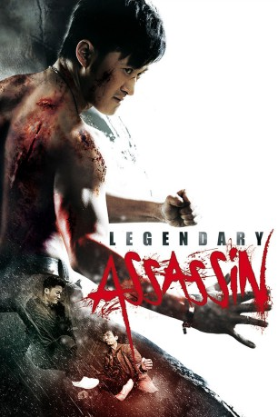
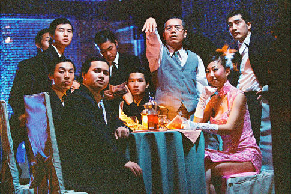

#1742 Legendary Assassin
 
 IMDB-Wertung: 6.2 / 10
IMDB-Wertung: 6.2 / 10  Metascore: 0
Metascore: 0 
Profikiller Bo sucht mit der Fähre eine der Hongkong vorgelagerten Inseln auf, um einen dort residierenden Gangsterboss zur Strecke zu bringen. Hernach möchte er dessen Kopf verpackt in einer Bowlingtasche seinem Auftraggeber überreichen, doch stellt sich heraus, dass wegen eines herannahenden Taifuns der Fährverkehr ruht. Nur eine letzte Hereinkommende wird noch abgefertigt, und die bringt ausgerechnet die bald darauf gerecht empörte Gang des Getöteten. Unterdessen knüpft der Killer romantische Bande ausgerechnet zu einer lokalen Polizistin.
Jahr: 2008
Dauer: 89 Minuten
FSK: 18
Land: Hong-Kong Studio: Splendid FilmTonspuren: DTS - ,
Untertitel: Deutsch,
Auflösung: 1080p (1920x1080) Größe: 4597 MB
Genre: Action, Thriller, Liebe
Regisseur: Chung Chi Li, Jing Wu
Drehbuch: Chi Keung Fung
Soundtrack: Ying-Wah Wong
Darsteller:
 Jing Wu als Bo Tong Lam
Jing Wu als Bo Tong Lam Celina Jade als Hiu Wor
Celina Jade als Hiu Wor-  Kai Man Tin als Jellyfish
- Kwok-Hung Cheung als CID
- Todd Eric Valcourt als Actor
- Kara Hui als Boss
- Zhan-Wen Keu als Timothy 'Chairman' Ma
- Chi Zhang als Chairman's Subordinate
- Xue Liang Zhu als Chairman's Subordinate
- Shan Peng Dang als Chairman's Subordinate
- Man-Wai Chow als Sexy Girl
- Hau-Yiu Ng als Sexy Girl
- Yin-Ming Sin als Sexy Girl
- Noriko Aoyama als Miho Sasaki - Chairman Ma's Wife
- Lik-Sun Fong als Handson
- Jamie Wong als Police
- Leo Lai als Police
 Suet Lam als Fat Wing
Suet Lam als Fat Wing- Yang Li als Chairman's Subordinate
- Sam Wong als Chairman's Subordinate
- Tze Ming Lee als Chairman's Subordinate
- Wing-Kuen Chan als Chairman's Subordinate
- Yat Wa Ho als Chairman's Subordinate
- Chi-Wing Shek als Chairman's Subordinate
- Yat-Biu Lam als Chairman's Subordinate
- Ronald Cheng als Fung Chi Keung
- Sing-Yuk Cheung als Siu Ming
 Ken Lo als Head of Robbers
Ken Lo als Head of Robbers- Baocheng Jiang als Robber
- Xinqiang Chen als Robber
- Pok-yee Ng als Police
- Sammy Leung als Tarzan
 Shiu Hung Hui als Grant Gong
Shiu Hung Hui als Grant Gong- Woon Ling Hau als Maggie
- Mark Cheng als Commissioner Yu
- Alex Lee als CID
- Chin Yiu Wing als CID
- Han Yuan Leung als CID
- Tat-Kwong Chan als Ma's Subordinate
- Yuk-Keung Kwok als Policeman
- Chi-Wai Lai als CID
- Tin-Bo Tam als Mrs. Robinson
- Wah Cheung als Extra , uncredited
- Jack Wai-Leung Wong als (uncredited
Datei: X:\FSK18-Eastern\Legendary Assassin (2008, FSK18, 1920x1080).mkv seit 12.08.2015
Festplatte: FSK18
 Es gibt insgesamt 102 Filme in der Gruppe 'FSK18-Eastern'
Es gibt insgesamt 102 Filme in der Gruppe 'FSK18-Eastern'